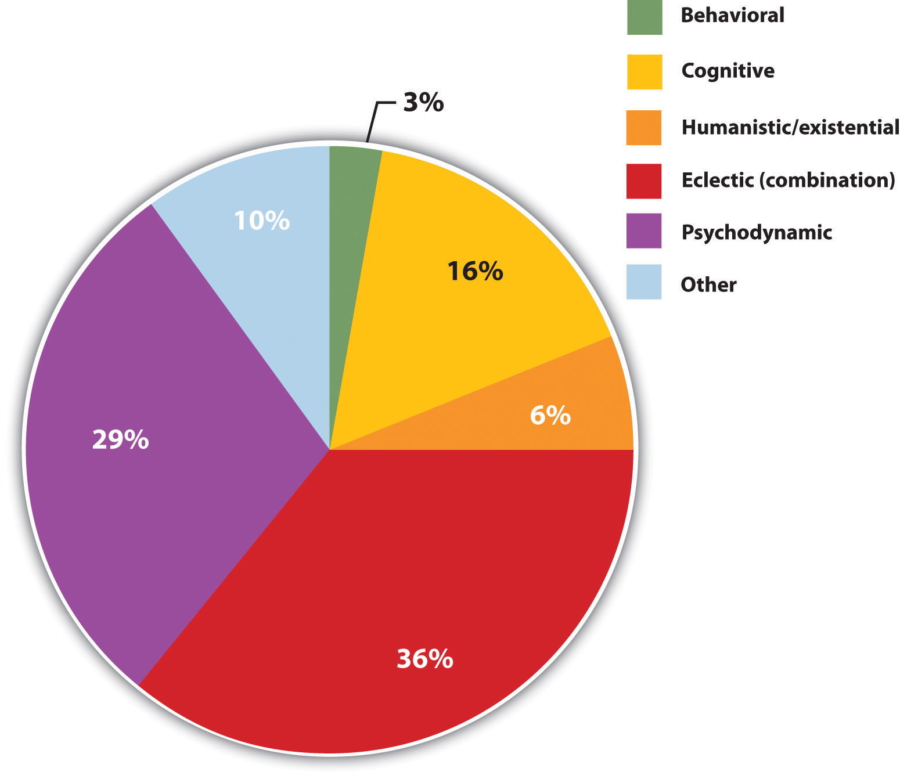
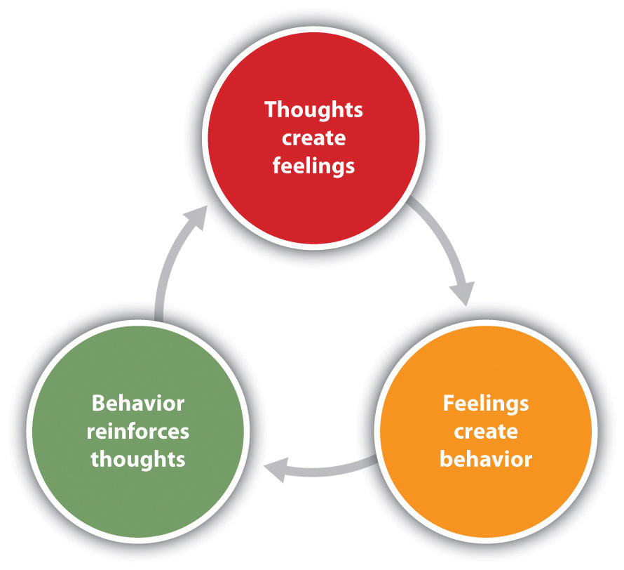

Treatment for psychological disorder begins when the individual who is experiencing distress visits a counselor or therapist, perhaps in a church, a community center, a hospital, or a private practice. The therapist will begin by systematically learning about the patient’s needs through a formal psychological assessmentAn evaluation of the patient’s psychological and mental health., which is an evaluation of the patient’s psychological and mental health. During the assessment the psychologist may give personality tests such as the Minnesota Multiphasic Personal Inventory (MMPI-2) or projective tests, and will conduct a thorough interview with the patient. The therapist may get more information from family members or school personnel.
In addition to the psychological assessment, the patient is usually seen by a physician to gain information about potential Axis III (physical) problems. In some cases of psychological disorder—and particularly for sexual problems—medical treatment is the preferred course of action. For instance, men who are experiencing erectile dysfunction disorder may need surgery to increase blood flow or local injections of muscle relaxants. Or they may be prescribed medications (Viagra, Cialis, or Levitra) that provide an increased blood supply to the penis, which are successful in increasing performance in about 70% of men who take them.
After the medical and psychological assessments are completed, the therapist will make a formal diagnosis using the detailed descriptions of the disorder provided in the Diagnostic and Statistical Manual of Mental Disorders (DSM; see below). The therapist will summarize the information about the patient on each of the five DSM axes, and the diagnosis will likely be sent to an insurance company to justify payment for the treatment.
To be diagnosed with ADHD the individual must display either A or B below (American Psychiatric Association, 2000):American Psychiatric Association. (2000). Diagnostic and statistical manual of mental disorders (4th ed., text rev.). Washington, DC: Author.
A. Six or more of the following symptoms of inattention have been present for at least 6 months to a point that is disruptive and inappropriate for developmental level:
B. Six or more of the following symptoms of hyperactivity-impulsivity have been present for at least 6 months to an extent that is disruptive and inappropriate for developmental level:
If a diagnosis is made, the therapist will select a course of therapy that he or she feels will be most effective. One approach to treatment is psychotherapyProfessional treatment for psychological disorder through techniques designed to encourage communication of conflicts and insight., the professional treatment for psychological disorder through techniques designed to encourage communication of conflicts and insight. The fundamental aspect of psychotherapy is that the patient directly confronts the disorder and works with the therapist to help reduce it. Therapy includes assessing the patient’s issues and problems, planning a course of treatment, setting goals for change, the treatment itself, and an evaluation of the patient’s progress. Therapy is practiced by thousands of psychologists and other trained practitioners in the United States and around the world, and is responsible for billions of dollars of the health budget.
To many people therapy involves a patient lying on a couch with a therapist sitting behind and nodding sagely as the patient speaks. Though this approach to therapy (known as psychoanalysis) is still practiced, it is in the minority. It is estimated that there are over 400 different kinds of therapy practiced by people in many fields, and the most important of these are shown in Figure 13.2 "The Many Types of Therapy Practiced in the United States". The therapists who provide these treatments include psychiatrists (who have a medical degree and can prescribe drugs) and clinical psychologists, as well as social workers, psychiatric nurses, and couples, marriage, and family therapists.
Figure 13.2 The Many Types of Therapy Practiced in the United States
These data show the proportion of psychotherapists who reported practicing each type of therapy.
Source: Adapted from Norcross, J. C., Hedges, M., & Castle, P. H. (2002). Psychologists conducting psychotherapy in 2001: A study of the Division 29 membership. Psychotherapy: Theory, Research, Practice, Training, 39(1), 97–102.
Many people who would benefit from psychotherapy do not get it, either because they do not know how to find it or because they feel that they will be stigmatized and embarrassed if they seek help. The decision to not seek help is a very poor choice because the effectiveness of mental health treatments is well documented and, no matter where a person lives, there are treatments available (U.S. Department of Health and Human Services, 1999).U.S. Department of Health and Human Services. (1999). Mental health: A report of the surgeon general. Washington, DC: U.S. Government Printing Office.
The first step in seeking help for psychological problems is to accept the stigma. It is possible that some of your colleagues, friends, and family members will know that you are seeking help and some may at first think more negatively of you for it. But you must get past these unfair and close-minded responses. Feeling good about yourself is the most important thing you can do, and seeking help may be the first step in doing so.
One question is how to determine if someone needs help. This question is not always easy to answer because there is no clear demarcation between “normal” and “abnormal” behavior. Most generally, you will know that you or others need help when the person’s psychological state is negatively influencing his or her everyday behavior, when the behavior is adversely affecting those around the person, and when the problems continue over a period of time. Often people seek therapy as a result of a life-changing event such as diagnosis of a fatal illness, an upcoming marriage or divorce, or the death of a loved one. But therapy is also effective for general depression and anxiety, as well as for specific everyday problems.
There are a wide variety of therapy choices, many of which are free. Begin in your school, community, or church, asking about community health or counseling centers and pastoral counseling. You may want to ask friends and family members for recommendations. You’ll probably be surprised at how many people have been to counseling, and how many recommend it.
There are many therapists who offer a variety of treatment options. Be sure to ask about the degrees that the therapist has earned, and about the reputation of the center in which the therapy occurs. If you have choices, try to find a person or location that you like, respect, and trust. This will allow you to be more open, and you will get more out of the experience. Your sessions with the help provider will require discussing your family history, personality, and relationships, and you should feel comfortable sharing this information.
Remember also that confronting issues requires time to reflect, energy to get to the appointments and deal with consequential feelings, and discipline to explore your issues on your own. Success at therapy is difficult, and it takes effort.
The bottom line is that going for therapy should not be a difficult decision for you. All people have the right to appropriate mental health care just as they have a right to general health care. Just as you go to a dentist for a toothache, you may go to therapy for psychological difficulties. Furthermore, you can be confident that you will be treated with respect and that your privacy will be protected, because therapists follow ethical principles in their practices. The following provides a summary of these principles as developed by the American Psychological Association (2010).American Psychological Association. (2010). Ethical principles of psychologists and code of conduct. Retrieved from http://www.apa.org/ethics/code/index.aspx?item=7#402
Psychodynamic therapy (psychoanalysis)A psychological treatment based on Freudian and neo-Freudian personality theories in which the therapist helps the patient explore the unconscious dynamics of personality. is a psychological treatment based on Freudian and neo-Freudian personality theories in which the therapist helps the patient explore the unconscious dynamics of personality. The analyst engages with the patient, usually in one-on-one sessions, often with the patient lying on a couch and facing away. The goal of the psychotherapy is for the patient to talk about his or her personal concerns and anxieties, allowing the therapist to try to understand the underlying unconscious problems that are causing the symptoms (the process of interpretationA technique of psychotherapy in which the therapist uses the patient’s expressed thoughts to understand the underlying unconscious problems.). The analyst may try out some interpretations on the patient and observe how he or she responds to them.
The patient may be asked to verbalize his or her thoughts through free associationA technique of psychotherapy in which the therapist listens while the client talks about whatever comes to mind, without any censorship or filtering., in which the therapist listens while the client talks about whatever comes to mind, without any censorship or filtering. The client may also be asked to report on his or her dreams, and the therapist will use dream analysisA technique of psychotherapy in which the therapist listens while the client describes his or her dreams and then analyzes the symbolism of the dreams. to analyze the symbolism of the dreams in an effort to probe the unconscious thoughts of the client and interpret their significance. On the basis of the thoughts expressed by the patient, the analyst discovers the unconscious conflicts causing the patient’s symptoms and interprets them for the patient.
The goal of psychotherapy is to help the patient develop insightAn understanding in psychotherapy of the unconscious causes of the disorder.—that is, an understanding of the unconscious causes of the disorder (Epstein, Stern, & Silbersweig, 2001; Lubarsky & Barrett, 2006),Epstein J., Stern E., & Silbersweig, D. (2001). Neuropsychiatry at the millennium: The potential for mind/brain integration through emerging interdisciplinary research strategies. Clinical Neuroscience Research, 1, 10–18; Lubarsky, L., & Barrett, M. S. (2006). The history and empirical status of key psychoanalytic concepts. Annual Review of Clinical Psychology, 2, 1–19. but the patient often shows resistanceAn occurrence in psychotherapy in which the patient uses defense mechanisms to avoid the painful feelings in his or her unconscious. to these new understandings, using defense mechanisms to avoid the painful feelings in his or her unconscious. The patient might forget or miss appointments, or act out with hostile feelings toward the therapist. The therapist attempts to help the patient develop insight into the causes of the resistance. The sessions may also lead to transferenceAn occurrence in psychotherapy in which the patient redirects feelings experienced in an important personal relationship toward the therapist., in which the patient unconsciously redirects feelings experienced in an important personal relationship toward the therapist. For instance, the patient may transfer feelings of guilt that come from the father or mother to the therapist. Some therapists believe that transference should be encouraged, as it allows the client to resolve hidden conflicts and work through feelings that are present in the relationships.
One problem with traditional psychoanalysis is that the sessions may take place several times a week, go on for many years, and cost thousands of dollars. To help more people benefit, modern psychodynamic approaches frequently use shorter-term, focused, and goal-oriented approaches. In these “brief psychodynamic therapies,” the therapist helps the client determine the important issues to be discussed at the beginning of treatment and usually takes a more active role than in classic psychoanalysis (Levenson, 2010).Levenson, H. (2010). Brief dynamic therapy. Washington, DC: American Psychological Association.
Just as psychoanalysis is based on the personality theories of Freud and the neo-Freudians, humanistic therapyA psychological treatment based on the personality theories of Carl Rogers and other humanistic psychologists. is a psychological treatment based on the personality theories of Carl Rogers and other humanistic psychologists. Humanistic therapy is based on the idea that people develop psychological problems when they are burdened by limits and expectations placed on them by themselves and others, and the treatment emphasizes the person’s capacity for self-realization and fulfillment. Humanistic therapies attempt to promote growth and responsibility by helping clients consider their own situations and the world around them and how they can work to achieve their life goals.
Carl Rogers developed person-centered therapy (or client-centered therapy)An approach to treatment in which the client is helped to grow and develop as the therapist provides a comfortable, nonjudgmental environment., an approach to treatment in which the client is helped to grow and develop as the therapist provides a comfortable, nonjudgmental environment. In his book, A Way of Being (1980),Rogers, C. (1980). A way of being. New York, NY: Houghton Mifflin. Rogers argued that therapy was most productive when the therapist created a positive relationship with the client—a therapeutic alliance. The therapeutic allianceA relationship between patient and client that occurs when the therapist is genuine, treats the client with unconditional positive regard, and develops empathy with the client. is a relationship between the client and the therapist that is facilitated when the therapist is genuine (i.e., he or she creates no barriers to free-flowing thoughts and feelings), when the therapist treats the client with unconditional positive regard (i.e., values the client without any qualifications, displaying an accepting attitude toward whatever the client is feeling at the moment), and when the therapist develops empathy with the client (i.e., that he or she actively listens to and accurately perceives the personal feelings that the client experiences).
Figure 13.3
Carl Rogers was among the founders of the humanistic approach to therapy and developed the fundamentals of person-centered therapy.
Source: Courtesy of http://commons.wikimedia.org/wiki/File:Carl_Ransom_Rogers.jpg.
The development of a positive therapeutic alliance has been found to be exceedingly important to successful therapy. The ideas of genuineness, empathy, and unconditional positive regard in a nurturing relationship in which the therapist actively listens to and reflects the feelings of the client is probably the most fundamental part of contemporary psychotherapy (Prochaska & Norcross, 2007).Prochaska, J. O., & Norcross, J. C. (2007). Systems of psychotherapy: A transtheoretical analysis (6th ed.). Pacific Grove, CA: Brooks/Cole.
Psychodynamic and humanistic therapies are recommended primarily for people suffering from generalized anxiety or mood disorders, and who desire to feel better about themselves overall. But the goals of people with other psychological disorders, such as phobias, sexual problems, and obsessive-compulsive disorder (OCD), are more specific. A person with a social phobia may want to be able to leave his or her house, a person with a sexual dysfunction may want to improve his or her sex life, and a person with OCD may want to learn to stop letting his obsessions or compulsions interfere with everyday activities. In these cases it is not necessary to revisit childhood experiences or consider our capacities for self-realization—we simply want to deal with what is happening in the present.
Cognitive-behavior therapy (CBT)A structured approach to treatment that attempts to reduce psychological disorders through systematic procedures based on cognitive and behavioral principles. is a structured approach to treatment that attempts to reduce psychological disorders through systematic procedures based on cognitive and behavioral principles. As you can see in Figure 13.4 "Cognitive-Behavior Therapy", CBT is based on the idea that there is a recursive link among our thoughts, our feelings, and our behavior. For instance, if we are feeling depressed, our negative thoughts (“I am doing poorly in my chemistry class”) lead to negative feelings (“I feel hopeless and sad”), which then contribute to negative behaviors (lethargy, disinterest, lack of studying). When we or other people look at the negative behavior, the negative thoughts are reinforced and the cycle repeats itself (Beck, 1976).Beck, A. T. (1976). Cognitive therapy and the emotional disorders. New York, NY: New American Library. Similarly, in panic disorder a patient may misinterpret his or her feelings of anxiety as a sign of an impending physical or mental catastrophe (such as a heart attack), leading to an avoidance of a particular place or social situation. The fact that the patient is avoiding the situation reinforces the negative thoughts. Again, the thoughts, feelings, and behavior amplify and distort each other.
Figure 13.4 Cognitive-Behavior Therapy
Cognitive-behavior therapy (CBT) is based on the idea that our thoughts, feelings, and behavior reinforce each other and that changing our thoughts or behavior can make us feel better.
CBT is a very broad approach that is used for the treatment of a variety of problems, including mood, anxiety, personality, eating, substance abuse, attention-deficit, and psychotic disorders. CBT treats the symptoms of the disorder (the behaviors or the cognitions) and does not attempt to address the underlying issues that cause the problem. The goal is simply to stop the negative cycle by intervening to change cognition or behavior. The client and the therapist work together to develop the goals of the therapy, the particular ways that the goals will be reached, and the timeline for reaching them. The procedures are problem-solving and action-oriented, and the client is forced to take responsibility for his or her own treatment. The client is assigned tasks to complete that will help improve the disorder and takes an active part in the therapy. The treatment usually lasts between 10 and 20 sessions.
Depending on the particular disorder, some CBT treatments may be primarily behavioral in orientation, focusing on the principles of classical, operant, and observational learning, whereas other treatments are more cognitive, focused on changing negative thoughts related to the disorder. But almost all CBT treatments use a combination of behavioral and cognitive approaches.
In some cases the primary changes that need to be made are behavioral. Behavioral therapyPsychological treatment that is based on principles of learning. is psychological treatment that is based on principles of learning. The most direct approach is through operant conditioning using reward or punishment. Reinforcement may be used to teach new skills to people, for instance, those with autism or schizophrenia (Granholm et al., 2008; Herbert et al., 2005; Scattone, 2007).Granholm, E., McQuaid, J. R., Link, P. C., Fish, S., Patterson, T., & Jeste, D. V. (2008). Neuropsychological predictors of functional outcome in cognitive behavioral social skills training for older people with schizophrenia. Schizophrenia Research, 100, 133–143. doi:10.1016/j.schres.2007.11.032; Herbert, J. D., Gaudini, B. A., Rheingold, A. A., Myers, V. H., Dalrymple, K., & Nolan, E. M. (2005). Social skills training augments the effectiveness of cognitive behavioral group therapy for social anxiety disorder. Behavior Therapy, 36, 125–138; Scattone, D. (2007). Social skills interventions for children with autism. Psychology in the schools, 44, 717–726. If the patient has trouble dressing or grooming, then reinforcement techniques, such as providing tokens that can be exchanged for snacks, are used to reinforce appropriate behaviors such as putting on one’s clothes in the morning or taking a shower at night. If the patient has trouble interacting with others, reinforcement will be used to teach the client how to more appropriately respond in public, for instance, by maintaining eye contact, smiling when appropriate, and modulating tone of voice.
As the patient practices the different techniques, the appropriate behaviors are shaped through reinforcement to allow the client to manage more complex social situations. In some cases observational learning may also be used; the client may be asked to observe the behavior of others who are more socially skilled to acquire appropriate behaviors. People who learn to improve their interpersonal skills through skills training may be more accepted by others and this social support may have substantial positive effects on their emotions.
When the disorder is anxiety or phobia, then the goal of the CBT is to reduce the negative affective responses to the feared stimulus. Exposure therapyA behavioral therapy based on the classical conditioning principle of extinction in which people are confronted with a feared stimulus with the goal of decreasing their negative emotional responses to it. is a behavioral therapy based on the classical conditioning principle of extinction, in which people are confronted with a feared stimulus with the goal of decreasing their negative emotional responses to it (Wolpe, 1973).Wolpe J. (1973). The practice of behavior therapy. New York, NY: Pergamon. Exposure treatment can be carried out in real situations or through imagination, and it is used in the treatment of panic disorder, agoraphobia, social phobia, OCD, and posttraumatic stress disorder (PTSD).
In flooding, a client is exposed to the source of his fear all at once. An agoraphobic might be taken to a crowded shopping mall or someone with an extreme fear of heights to the top of a tall building. The assumption is that the fear will subside as the client habituates to the situation while receiving emotional support from the therapist during the stressful experience. An advantage of the flooding technique is that it is quick and often effective, but a disadvantage is that the patient may relapse after a short period of time.
More frequently, the exposure is done more gradually. Systematic desensitizationA behavioral treatment that combines imagining or experiencing the feared object or situation with relaxation exercises. is a behavioral treatment that combines imagining or experiencing the feared object or situation with relaxation exercises (Wolpe, 1973).Wolpe J. (1973). The practice of behavior therapy. New York, NY: Pergamon. The client and the therapist work together to prepare a hierarchy of fears, starting with the least frightening, and moving to the most frightening scenario surrounding the object (Table 13.1 "Hierarchy of Fears Used in Systematic Desensitization"). The patient then confronts her fears in a systematic manner, sometimes using her imagination but usually, when possible, in real life.
Table 13.1 Hierarchy of Fears Used in Systematic Desensitization
| Behavior | Fear rating |
|---|---|
| Think about a spider. | 10 |
| Look at a photo of a spider. | 25 |
| Look at a real spider in a closed box. | 50 |
| Hold the box with the spider. | 60 |
| Let a spider crawl on your desk. | 70 |
| Let a spider crawl on your shoe. | 80 |
| Let a spider crawl on your pants leg. | 90 |
| Let a spider crawl on your sleeve. | 95 |
| Let a spider crawl on your bare arm. | 100 |
Desensitization techniques use the principle of counterconditioning, in which a second incompatible response (relaxation, e.g., through deep breathing) is conditioned to an already conditioned response (the fear response). The continued pairing of the relaxation responses with the feared stimulus as the patient works up the hierarchy gradually leads the fear response to be extinguished and the relaxation response to take its place.
Behavioral therapy works best when people directly experience the feared object. Fears of spiders are more directly habituated when the patient interacts with a real spider, and fears of flying are best extinguished when the patient gets on a real plane. But it is often difficult and expensive to create these experiences for the patient. Recent advances in virtual reality have allowed clinicians to provide CBT in what seem like real situations to the patient. In virtual reality CBT, the therapist uses computer-generated, three-dimensional, lifelike images of the feared stimulus in a systematic desensitization program. Specially designed computer equipment, often with a head-mount display, is used to create a simulated environment. A common use is in helping soldiers who are experiencing PTSD return to the scene of the trauma and learn how to cope with the stress it invokes.
Some of the advantages of the virtual reality treatment approach are that it is economical, the treatment session can be held in the therapist’s office with no loss of time or confidentiality, the session can easily be terminated as soon as a patient feels uncomfortable, and many patients who have resisted live exposure to the object of their fears are willing to try the new virtual reality option first.
Figure 13.5
Trained clinicians use computer-generated, three-dimensional, lifelike images of spiders instead of the real thing in systematic desensitization programs to help combat client fears. Specially designed computer equipment with a head-mount display is used to create a simulated environment.
Source: Courtesy of Hunter Hoffman and Firsthand Technology, http://www.firsthand.com/creations/images/SpiderHand02_800.png.
Aversion therapyA behavioral therapy in which positive punishment is used to reduce the frequency of an undesirable behavior. is a type of behavior therapy in which positive punishment is used to reduce the frequency of an undesirable behavior. An unpleasant stimulus is intentionally paired with a harmful or socially unacceptable behavior until the behavior becomes associated with unpleasant sensations and is hopefully reduced. A child who wets his bed may be required to sleep on a pad that sounds an alarm when it senses moisture. Over time, the positive punishment produced by the alarm reduces the bedwetting behavior (Houts, Berman, & Abramson, 1994).Houts, A. C., Berman, J. S., & Abramson, H. (1994). Effectiveness of psychological and pharmacological treatments for nocturnal enuresis. Journal of Consulting and Clinical Psychology, 62(4), 737–745. Aversion therapy is also used to stop other specific behaviors such as nail biting (Allen, 1996).Allen K. W. (1996). Chronic nailbiting: A controlled comparison of competing response and mild aversion treatments. Behaviour Research and Therapy, 34, 269–272. doi:10.1016/0005-7967(95)00078-X
Alcoholism has long been treated with aversion therapy (Baker & Cannon, 1988).Baker, T. B., & Cannon, D. S. (1988). Assessment and treatment of addictive disorders. New York, NY: Praeger. In a standard approach, patients are treated at a hospital where they are administered a drug, antabuse, that makes them nauseous if they consume any alcohol. The technique works very well if the user keeps taking the drug (Krampe et al., 2006),Krampe, H., Stawicki, S., Wagner, T., Bartels, C., Aust, C., Rüther, E.,…Ehrenreich, H. (2006). Follow-up of 180 alcoholic patients for up to 7 years after outpatient treatment: Impact of alcohol deterrents on outcome. Alcoholism: Clinical and Experimental Research, 30(1), 86–95. but unless it is combined with other approaches the patients are likely to relapse after they stop the drug.
While behavioral approaches focus on the actions of the patient, cognitive therapyA psychological treatment that helps clients identify incorrect or distorted beliefs that are contributing to disorder. is a psychological treatment that helps clients identify incorrect or distorted beliefs that are contributing to disorder. In cognitive therapy the therapist helps the patient develop new, healthier ways of thinking about themselves and about the others around them. The idea of cognitive therapy is that changing thoughts will change emotions, and that the new emotions will then influence behavior (see Figure 13.4 "Cognitive-Behavior Therapy").
The goal of cognitive therapy is not necessarily to get people to think more positively but rather to think more accurately. For instance, a person who thinks “no one cares about me” is likely to feel rejected, isolated, and lonely. If the therapist can remind the person that she has a mother or daughter who does care about her, more positive feelings will likely follow. Similarly, changing beliefs from “I have to be perfect” to “No one is always perfect—I’m doing pretty good,” from “I am a terrible student” to “I am doing well in some of my courses,” or from “She did that on purpose to hurt me” to “Maybe she didn’t realize how important it was to me” may all be helpful.
The psychiatrist Aaron T. Beck and the psychologist Albert Ellis (1913–2007) together provided the basic principles of cognitive therapy. Ellis (2004)Ellis, A. (2004). Why rational emotive behavior therapy is the most comprehensive and effective form of behavior therapy. Journal of Rational-Emotive & Cognitive-Behavior Therapy, 22, 85–92. called his approach rational emotive behavior therapy (REBT) or rational emotive therapy (RET), and he focused on pointing out the flaws in the patient’s thinking. Ellis noticed that people experiencing strong negative emotions tend to personalize and overgeneralize their beliefs, leading to an inability to see situations accurately (Leahy, 2003).Leahy, R. L. (2003). Cognitive therapy techniques: A practitioner’s guide. New York, NY: Guilford Press. In REBT, the therapist’s goal is to challenge these irrational thought patterns, helping the patient replace the irrational thoughts with more rational ones, leading to the development of more appropriate emotional reactions and behaviors.
Figure 13.6

Aaron Beck and Albert Ellis were pioneers in cognitive therapy.
Sources: Beck photo courtesy of Michael Britt, http://www.flickr.com/photos/psychfiles/2282352636. Ellis photo courtesy of the Albert Ellis Institute, http://rebtinstitute.org/public/about-albert-ellis4.html.
Beck’s (Beck, 1995; Beck, Freeman, & Davis, 2004))Beck, J. S. (1995). Cognitive therapy: Basics and beyond. New York, NY: Guilford Press; Beck, A. T., Freeman, A., & Davis, D. D. (2004). Cognitive therapy of personality disorders (2nd ed.). New York, NY: Guilford Press. cognitive therapy was based on his observation that people who were depressed generally had a large number of highly accessible negative thoughts that influenced their thinking. His goal was to develop a short-term therapy for depression that would modify these unproductive thoughts. Beck’s approach challenges the client to test his beliefs against concrete evidence. If a client claims that “everybody at work is out to get me,” the therapist might ask him to provide instances to corroborate the claim. At the same time the therapist might point out contrary evidence, such as the fact that a certain coworker is actually a loyal friend or that the patient’s boss had recently praised him.
To this point we have considered the different approaches to psychotherapy under the assumption that a therapist will use only one approach with a given patient. But this is not the case; as you saw in Figure 13.2 "The Many Types of Therapy Practiced in the United States", the most commonly practiced approach to therapy is an eclectic therapyAn approach to treatment in which the therapist uses whichever techniques seem most useful and relevant for a given patient., an approach to treatment in which the therapist uses whichever techniques seem most useful and relevant for a given patient. For bipolar disorder, for instance, the therapist may use both psychological skills training to help the patient cope with the severe highs and lows, but may also suggest that the patient consider biomedical drug therapies (Newman, Leahy, Beck, Reilly-Harrington, & Gyulai, 2002).Newman, C. F., Leahy, R. L., Beck, A. T., Reilly-Harrington, N. A., & Gyulai, L. (2002). Clinical management of depression, hopelessness, and suicidality in patients with bipolar disorder. In C. F. Newman, R. L. Leahy, A. T. Beck, N. A. Reilly-Harrington, & L. Gyulai (Eds.), Bipolar disorder: A cognitive therapy approach (pp. 79–100). Washington, DC: American Psychological Association. doi:10.1037/10442-004 Treatment for major depressive disorder usually involves antidepressant drugs as well as CBT to help the patient deal with particular problems (McBride, Farvolden, & Swallow, 2007).McBride, C., Farvolden, P., & Swallow, S. R. (2007). Major depressive disorder and cognitive schemas. In L. P. Riso, P. L. du Toit, D. J. Stein, & J. E. Young (Eds.), Cognitive schemas and core beliefs in psychological problems: A scientist-practitioner guide (pp. 11–39). Washington, DC: American Psychological Association.
As we have seen in Chapter 12 "Defining Psychological Disorders", one of the most commonly diagnosed disorders is borderline personality disorder (BPD). Consider this description, typical of the type of borderline patient who arrives at a therapist’s office:
Even as an infant, it seemed that there was something different about Bethany. She was an intense baby, easily upset and difficult to comfort. She had very severe separation anxiety—if her mother left the room, Bethany would scream until she returned. In her early teens, Bethany became increasingly sullen and angry. She started acting out more and more—yelling at her parents and teachers and engaging in impulsive behavior such as promiscuity and running away from home. At times Bethany would have a close friend at school, but some conflict always developed and the friendship would end.
By the time Bethany turned 17, her mood changes were totally unpredictable. She was fighting with her parents almost daily, and the fights often included violent behavior on Bethany’s part. At times she seemed terrified to be without her mother, but at other times she would leave the house in a fit of rage and not return for a few days. One day, Bethany’s mother noticed scars on Bethany’s arms. When confronted about them, Bethany said that one night she just got more and more lonely and nervous about a recent breakup until she finally stuck a lit cigarette into her arm. She said “I didn’t really care for him that much, but I had to do something dramatic.”
When she was 18 Bethany rented a motel room where she took an overdose of sleeping pills. Her suicide attempt was not successful, but the authorities required that she seek psychological help.
Most therapists will deal with a case such as Bethany’s using an eclectic approach. First, because her negative mood states are so severe, they will likely recommend that she start taking antidepressant medications. These drugs are likely to help her feel better and will reduce the possibility of another suicide attempt, but they will not change the underlying psychological problems. Therefore, the therapist will also provide psychotherapy.
The first sessions of the therapy will likely be based primarily on creating trust. Person-centered approaches will be used in which the therapist attempts to create a therapeutic alliance conducive to a frank and open exchange of information.
If the therapist is trained in a psychodynamic approach, he or she will probably begin intensive face-to-face psychotherapy sessions at least three times a week. The therapist may focus on childhood experiences related to Bethany’s attachment difficulties but will also focus in large part on the causes of the present behavior. The therapist will understand that because Bethany does not have good relationships with other people, she will likely seek a close bond with the therapist, but the therapist will probably not allow the transference relationship to develop fully. The therapist will also realize that Bethany will probably try to resist the work of the therapist.
Most likely the therapist will also use principles of CBT. For one, cognitive therapy will likely be used in an attempt to change Bethany’s distortions of reality. She feels that people are rejecting her, but she is probably bringing these rejections on herself. If she can learn to better understand the meaning of other people’s actions, she may feel better. And the therapist will likely begin using some techniques of behavior therapy, for instance, by rewarding Bethany for successful social interactions and progress toward meeting her important goals.
The eclectic therapist will continue to monitor Bethany’s behavior as the therapy continues, bringing into play whatever therapeutic tools seem most beneficial. Hopefully, Bethany will stay in treatment long enough to make some real progress in repairing her broken life.
One example of an eclectic treatment approach that has been shown to be successful in treating BPD is dialectical behavioral therapy (DBT; Linehan & Dimeff, 2001).Linehan, M. M., & Dimeff, L. (2001). Dialectical behavior therapy in a nutshell. The California Psychologist, 34, 10–13. DBT is essentially a cognitive therapy, but it includes a particular emphasis on attempting to enlist the help of the patient in his or her own treatment. A dialectical behavioral therapist begins by attempting to develop a positive therapeutic alliance with the client, and then tries to encourage the patient to become part of the treament process. In DBT the therapist aims to accept and validate the client’s feelings at any given time while nonetheless informing the client that some feelings and behaviors are maladaptive, and showing the client better alternatives. The therapist will use both individual and group therapy, helping the patient work toward improving interpersonal effectiveness, emotion regulation, and distress tolerance skills.